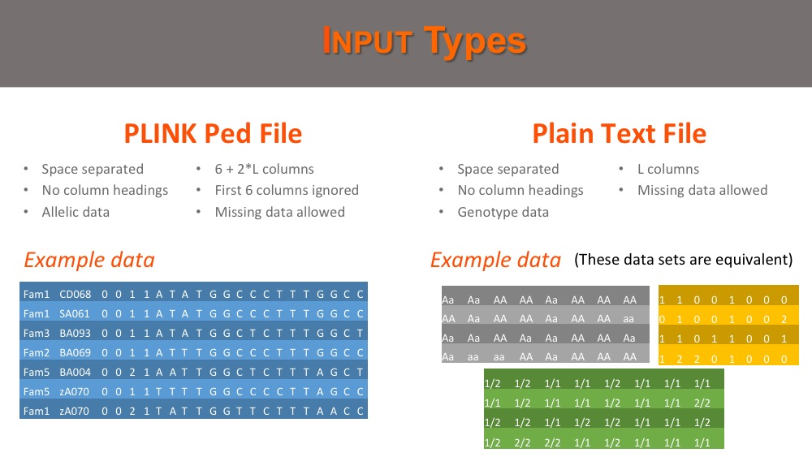
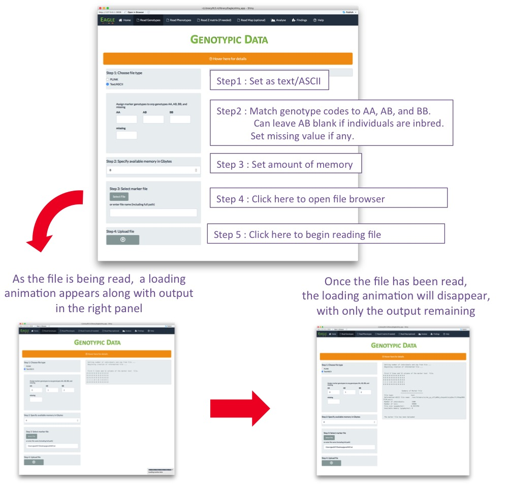
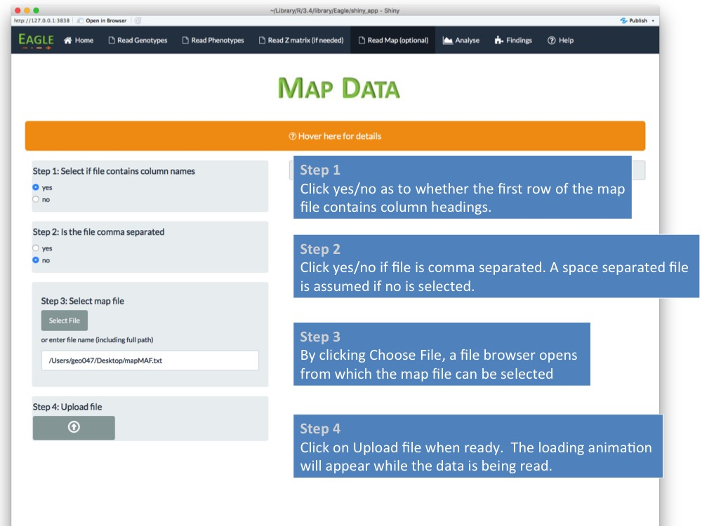
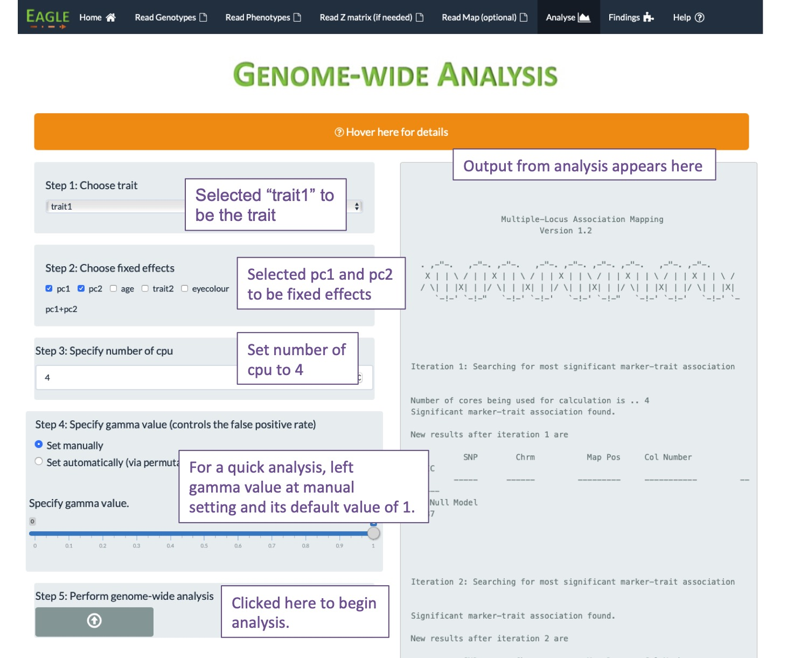

Getting Started
To install the Eagle package, from an interactive session in R, type the following command
install.packages("Eagle", dependencies=TRUE)The Eagle package is loaded into your R session with
library("Eagle")Running Eagle via the GUI
The easiest way of interacting with Eagle and performing an analysis is through our web-based graphical user interface (GUI). To run the GUI, at the R prompt, type
OpenUI()The Eagle GUI home page - a good place to start
How to organize your association mapping data
We split the study data into three separate datasets:
Reading in the Marker Data
There are two types of marker data file that Eagle can handle; a PLINK ped file and a plain text file. Below, is an example of each of these file types.

To read in the marker data which are in PLINK format, click on the Read Genotype tab in the navigation bar at the top of the home page and complete the form (see below). After the upload file button has been pushed, a loading animation will appear along with summary output.

To read in the marker data which are in a plain text file, click on the Read Genotype tab in the navigation bar at the top of the home page and complete the form (see below). After the upload file button has been pushed, a loading animation will appear along with summary output.

Reading in the Phenotypic Data
The file containing the phenotypic data is a plain text file. Below are three examples of what this file could contain.

To read in the phenotypic data, click on the Read Phenotype tab in the navigation bar and complete the form (see below). After the upload file has been pushed, a loading animation will appear along with summary information.

Reading in the Marker Map
The file containing the marker map is a plain text file. Below are two examples of what this file could contain.

To read in the map data, click on the Read Map tab in the navigation bar and complete the form (see below). After the upload file has been pushed, a loading animation will appear along with summary information.
Performing Genome-wide Association Mapping
We will assume that you have loaded your data successfully into Eagle. You are now ready to analyse your data. To demonstrate how to do this, below we present two scenarios.
Scenario 1: here the phenotypic data file contains observations from a single quantitative trait. There are no fixed effects (or features) in the file. Our computer has a quad-core processor so we can distribute our computations across four cores.

Scenario 2: here the phenotypic data file contains observations from three quantitative traits and two fixed effects. The trait of interest is "y2". The fixed effects that are to be included in the model are "pc1" and "pc2". Our system has a quad-core processor so we can distribute our computations across four cores.
Findings
adfadfasdf